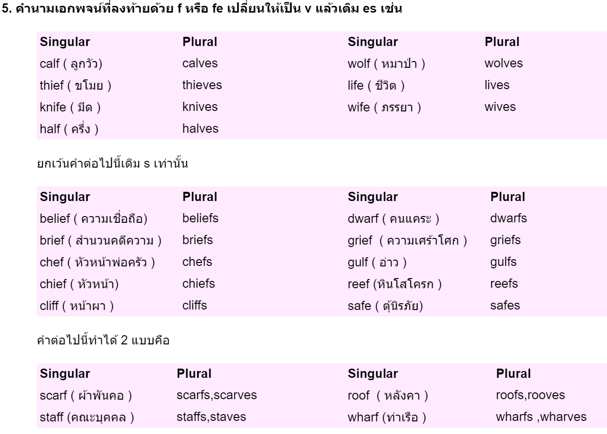

Plural and Singular
คำนามเอกพจน์ (Singular Noun) และคำนามพหูพจน์ (Plural Noun)
คำนามเอกพจน์ คือ คำนามที่แสดงถึงสิ่งของเพียงชิ้นเดียว คนๆเดียว หรือสัตว์ตัวเดียว เช่น กระเป๋า 1 ใบ (a bag) ผู้ชาย 1 คน (a man) พูดง่ายๆเลยก็คือ อะไรก็ตามที่มีเพียงหนึ่งหน่วย เราเรียกว่า คำนามเอกพจน์
คำนามพหูพจน์ คือ คำนามที่แสดงถึงสิ่งของที่มีมากกว่า 1 ชิ้น เช่น กระเป๋า 2 ใบ (2 bags) ผู้ชาย 4 คน (4 men) เป็นต้น อย่างที่เรารู้กันดีว่า ในภาษาอังกฤษเวลาที่เราต้องการเปลี่ยน “คำนามเอกพจน์ให้เป็นพหูพจน์” เพื่อบอกปริมาณสิ่งของที่เพิ่มขึ้นนั้นสามารถทำได้หลายวิธี
หลักการใช้มีดังนี้ คือ
1.) เติม –s ท้ายคำนามได้เลย ได้ยินกันบ่อยมากกก เรื่องของการ เติม –s เวลาที่เราต้องการพูดถึงคำนามที่มีมากกว่าหนึ่ง ส่วนมากเราสามารถเติม –s ไปหลังคำนามได้เลย เช่น ห้างสรรพสินค้า 3 แห่ง จากเดิมที่ใช้ Mall ก็ให้เติม –s ลงไป เป็น Malls แทน
2.) หากคำนามลงท้ายด้วย ch, s, ss, sh, x, และ z ต้องเติม -es ท้ายคำนั้นๆ
3.) คำนามที่ลงท้ายด้วย O แบ่งเป็น 2 ประเภทคือ เติม –s หรือ เติม –es แล้วเราจะรู้ได้อย่างไรว่า คำไหนเติม –s คำไหนเติม –es ? คำตอบคือ ต้องจำและใช้บ่อยๆ – ส่วนมากแล้วคำนามที่ลงท้ายด้วย –o มักจะเติม –s ได้เลย
4.) คำนามที่ลงท้ายด้วย –y แบ่งเป็น 2 ประเภท คือเติม-s หรือเติม –es

5.) คำนามที่ลงท้ายด้วย –f หรือ –fe ให้เปลี่ยนตัว –f หรือ –fe เป็น –v แล้วเติม –es
6.) คำนามบางคำ เวลาทำให้เป็นพหูพจน์ เราต้องเปลี่ยนรูปคำนั้นทันที

7.) คำนามบางคำ สามารถใช้รูปเดิมได้ทั้งเวลาเป็นเอกพจน์หรือพหูพจน์ ไม่ต้องเปลี่ยนรูปหรือเติมอะไรเลย ส่วนมากก็จะเป็นคำที่เกี่ยวกับสัตว์ทั้งนั้น
8.) คำนามบางคำเป็นพหูพจน์อยู่เสมอต้องมี –s หรือ –es ต่อท้ายตลอด ไม่มีไม่ได้